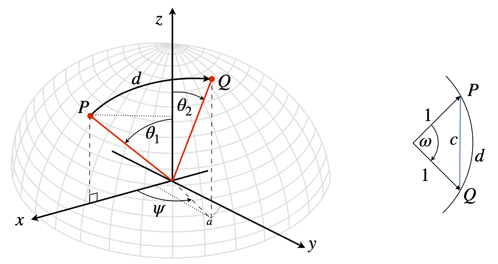

Projections and components¶
6 Projections¶
To find the projection or component of a vector \(\vec A\) that lies along an axis, the dot product with one of the vector’s orthonormal base vectors is calculated. For example, to calculate the component along the x-axis the base vector \(\boldsymbol i\) is used;
This shows that only the \(x\) component is extracted and you can see how to obtain the \(b\) and \(c\) components using \(\boldsymbol j\) and \(\boldsymbol k\) instead of \(\boldsymbol i\). More usefully, since the dot product can be written as
then
is the projection of the component of vector \(A\) along the \(x\)-axis, which is the same result as obtained by trigonometry. Recall that \(|\vec A |\) is the magnitude of \(\vec A\).
The projection of a vector \(\vec w\) onto another \(\vec v\), produces a new vector \(\vec P\), which is calculated in a similar way to the projection onto a base vector. The diagram figure 17 shows two vectors and their projection, \(\vec P\).
The projection of \(\vec w\) onto \(\vec v\) is made in three steps: the length of the projection is the size of the vector \(\vec w\) multiplied by the cosine of the angle between them, as in figure 3.
The procedure is
(a) Convert \(\vec v\) and \(\vec w\) into unit vectors (i.e. normalize them) and calculate their dot product, which is \(\cos(\theta)\).
(b) Multiply by the magnitude of \(\vec w\) to get the actual projection. This produces a scalar.
(c) Multiply by the unit vector of \(\vec v\). All this does is to make the projection vector lie in the direction of \(\vec v\).
Steps (a) and (b): the normalized dot product of the two vectors is \(\displaystyle \frac{\vec w \cdot \vec v}{|\vec w||\vec v|}\), where \(|\vec w|\) is the length of vector \(w\) and similarly for vector \(v\).
In step (c) multiplying by the length of \(\vec w\) and by the unit vector \(\vec v/|\vec v|\) produces the projection of \(\vec w\) onto \(\vec v\)
The length of the projection is
and where the absolute values make the length positive.
You can see, perhaps, that the projection of \(\vec v\) onto \(\vec w\) is not the same as \(\vec w\) onto \(\vec v\). If the matrix-vector notation is used, then the projection of \(n\)-dimensional vectors onto one another can be worked out and this type of calculation is common in quantum mechanics.
Figure 17. The projection of vector \(\vec w\) onto \(\vec v\). Even if \(\vec w\) and \(\vec v\) are separated, they can be translated to meet at one point O and the projection is unchanged. The projection is vector \(\vec P\).
(i) Work done¶
Consider the work done, \(W\), on moving an object. This is force \(\times\) distance, but if the force is not applied in the direction that the object is moved, but at an angle \(\theta\), then only a component of the force is effective. The total work done is \(W = |F||d|\cos(\theta) = \vec F\cdot\vec d\), which is a scalar number. If force is given by the vector \(\vec F=\begin{bmatrix}5 & -3& 1\end{bmatrix}\) and the direction of motion by \(\vec d=\begin{bmatrix}2&3 &4\end{bmatrix}\), then the work done is,
In vector-matrix form this is \(\displaystyle W=\begin{bmatrix}5 & -3 & 1\end{bmatrix}\begin{bmatrix}2\\3\\4\end{bmatrix}=5\)
The same calculation, as a projection of the force onto the direction of motion, is the vector \(P\), equation 14,
where the dot product is a scalar. The magnitude of the projection is by eqn 15,
To calculate the total work, this projected length has to be multiplied by the distance moved which is the length of vector \(\vec d = (2\boldsymbol i + 3\boldsymbol j + 4\boldsymbol k)\) which is \(\sqrt{29}\), therefore the work is \(5\) as calculated above.
If the vectors are greater than three dimensional then the \((\boldsymbol i, \boldsymbol j, \boldsymbol k)\) basis cannot be used and matrices are used instead. For example if \(\vec w=\begin{bmatrix}1& 3& 5& 7\end{bmatrix}\) and \(\vec v = \begin{bmatrix}2& 4& 6& 8\end{bmatrix} \) the projection of \(\vec w\) onto \(\vec v\) is still given by eqn 14.
The square of the magnitude
The dot product \(\vec w\cdot \vec v=100\). Therefore the projection \(\vec P_{w\to v}=\begin{bmatrix}2& 4& 6& 8\end{bmatrix}(5/6)\) and the length o f the projection \(50/\sqrt{30}\). The projection of \(\vec v\) onto \(\vec w\) is \(\begin{bmatrix}1& 3& 5& 7\end{bmatrix}(25/21)\) with length \(50/\sqrt{21}\).
(ii) Distance on a sphere¶
Calculating the distance from one point to another on the surface of a sphere is easily achieved using vectors. Figure 17a shows two points \(P\) ans \(Q\) are a distance \(d\) apart on the great circle which is the shortest path on the surface. The spherical polar angles are \(\theta\) the polar angles and \(\phi\) the azimuthal angle. If the distance \(d\) was on the Earth then a slightly different notation would be used because the latitude is the angle upwards from the equator in other words \(90-\theta\). The longitude is the angle from the \(x\) axis, (the azimuthal angle) and on earth the prime meridian is at zero longitude and passes through Greenwich in London.
To make the calculation simpler the points \(P,Q\) can be rotated as a pair so that \(P\) lies on the x-axis, the angle \(\phi\) is then the difference in longitude to point \(Q\). The second simplification is to define the radius of the sphere as unity. The distance can always be multiplied by the radius at the end of the calculation. In figure 17a (right) if the radius is \(1\) as drawn then \(d\) the arc length is numerically equal to \(\omega\), i.e. \(d=\omega\) because \(\omega/2\pi = d/2\pi R\) on a sphere of radius \(R\). The chord length \(c\) is clearly not the same as the arc length \(d\). The dot product,
relates the angle to the coordinates of the points. Note that the angle \(\omega\) is not the sum of \(\theta_1+\theta_2\); these two angles could be at right angles to one another for example. The points are \(P=[x_1,y_1,z_1], Q=[x_2,y_2,z_2]\) in Cartesian coordinates but we only know them in spherical polar ones. The conversion is found using projections onto the \(x,y,z\) axes.
As \(P\) is in the x-z plane \(y_1=0\). The projection onto the z-axis is \(z_1=\cos(\theta_1)\) and \(x_1=\sin(\theta_1)\) making the vector
The vector for \(Q\) is a little more involved. The \(z\) value \(z_2=\cos(\theta_2)\) but to find the \(y\) and \(x\) values the length of the projection of \(Q\) in the xy plane is needed and this can be seen as point \(a\) and is \(\sin(\theta_2)\). Next the projections of \(a\) onto the x and y axes are needed, thus \(y_2=\sin(\theta_2)\sin(\psi)\) and \(x_2=\sin(\theta_2)\cos(\psi)\). The \(Q\) vector is therefore
and the dot product
and since \(\omega \equiv d\) the distance can be easily calculated.
If we were calculating the distance between two locations on Earth then an equivalent formula is used. First as latitude is defined as the angle towards the north pole from the equation or \(\chi=\pi/2-\theta\) cosine and sine in \(\theta\) are swapped, and secondly the latitude is usually written as the difference in longitude or \(\Delta \lambda\) instead of \(\phi\) and with these changes \(\psi \to\Delta \lambda\) and replacing the angle with \(d/R\) produces
While this equation is exact, it had difficulties in the past when computer precision was limited and still does if the numerical precision of the calculator is limited, i.e. not 64 bit or double precision. This is because for small distances \(\Delta \lambda\to 0\) and its cosine becomes very, very close to 1 and the equation returns a distance of zero because also \(\chi_1 \approx \chi_2\). In geographical terms this means a distance of \(\approx 3\) km or less will produce an inaccurate, i.e wrong value. This can be appreciated when \(\Delta \lambda\) is small because then \(\cos(\Delta \lambda)\to 1\). This changes
and so \(\omega\equiv d\to 0\).
To correct for this numerical inaccuracy two approaches are made. First use the identity \(2\sin^2(x/2)=(1-\cos(x))\) to convert the cosine to sine and secondly simplify with \(\cos(x_2-x_1)=\cos(x_2)\cos(x_1)+\sin(x_2)\sin(x_1)\) and after some manipulation produces the Haversine formula historically used for accurate determination of distances.
where \(\Delta \chi\) is the difference in latitude (in radians) and \(\Delta \lambda\) the difference in longitude also in radians.

Figure 17a. Calculating the shortest distance (a Great Circle) between two points on the surface of a sphere using the dot product and spherical polar coordinates.
6.1 Direction cosines¶
A three-dimensional vector is often defined as \(\vec V = a\boldsymbol i + b\boldsymbol j + c\boldsymbol k\). However, the vector can equally well be described by the angles it makes to the \(x, y\) and \(z\)-axes, when these angles are \(\alpha, \beta, \gamma\), as shown in figure 18, where the angles are measured away from the axes to the vector. The vector \(v\) is now described by
and the components \(\cos(\alpha), \cos(\beta), \cos(\gamma )\) are each direction cosines . The direction cosines are, therefore, the projections the normalized vector \(v\) makes onto each of the \(x-, y-\) and \(z-\) axes. They are also the dot product of vector \(v\) with each base vector \(\boldsymbol i, \boldsymbol j , \boldsymbol k\) in turn. Taking the dot product with base vector \(\boldsymbol i\) gives
Because \(\vec v = a\boldsymbol i + b\boldsymbol j + c\boldsymbol k\), the direction cosine can also be written as
In matrix-vector notation, this calculation is
which is the same result as \(|\vec v|=\sqrt{\vec v\cdot \vec v}=\sqrt{a^2+b^2+c^2}\)
Taking the dot product of \(\vec v\) with itself, then the sum rule for direction cosines is found,
This equation shows that the angles are not independent because knowing two of them determines the third. Note that direction cosines describe the vector by angles rather than components of \((x, y, z)\) and hence can be used to find these angles; alternatively, if the angles are given, they can be used to find the \(x, y, z\) components.
As an example, let us find the angles that the vector \(\vec R = 3\boldsymbol i + 6\boldsymbol j - 2\boldsymbol k\) makes with the x-axis and calculate the direction cosines for this vector. First, assume that the angles are \(\alpha, \beta\), and \(\gamma\) with respect to the positive \(x-, y-\), and \(z-\)axes, as in figure 18, as this is the convention. The dot product with unit vector \(\boldsymbol i\) produces
because \(|\boldsymbol i| = 1\) and the length of the vector is \(\sqrt{3^2 + 6^2 + 2^2} = 7\). Next, using vector components
and combining these two equations gives the direction cosine as \(\cos(\alpha) = 3/7\), and the angle \(\alpha = \cos^{-1}(3/7)\) or \(\alpha = 64.62^\text{o}\). A similar calculation gives the other direction cosines as \(\cos(\beta)=6/7\) and \(\cos(\gamma)=-2/7\). As a check use eqn. 17, \((3/7)^2+(6/7)^2+(-2/7)^2= 1\)
Figure 18. Vector \(\vec v\) defined by angles, \(\alpha,\beta, \gamma\).